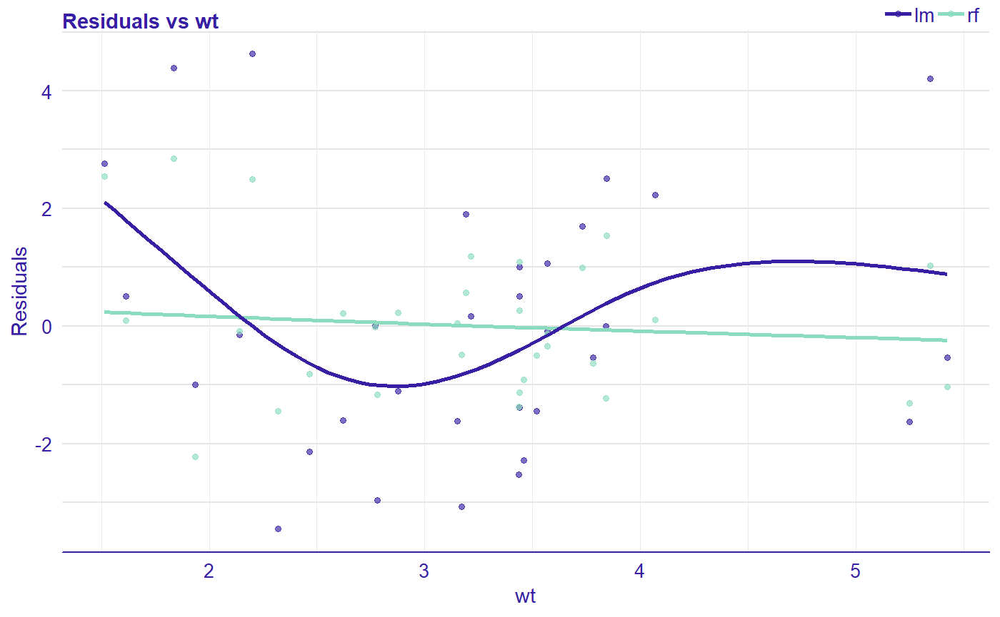

Package auditor is a tool for model-agnostic validation. Implemented techniques facilitate assessing and comparing the goodness of fit and performance of models. In addition, they may be used for the analysis of the similarity of residuals and for the identification of outliers and influential observations. The examination is carried out by diagnostic scores and visual verification. Due to the flexible and consistent grammar, it is simple to validate models of any classes.
auditor’s pipeline: model %>% audit() %>% plot(type=…)
Demo
Run the code below or try the auditor.
library(auditor)
library(randomForest)
data(mtcars)
# fitting models
model_lm <- lm(mpg ~ ., data = mtcars)
set.seed(123)
model_rf <- randomForest(mpg ~ ., data = mtcars)
# creating a modelAudit object which contains all necessary components required for further processing
au_lm <- audit(model_lm)
au_rf <- audit(model_rf, label = "rf")
# generating plots
plotResidual(au_lm, au_rf, variable = "wt", smooth = TRUE)
More
-
Cheatsheets
A preprint of the article about auditor is available on arxiv.
Acknowledgments: Work on this package was financially supported by the ‘NCN Opus grant 2016/21/B/ST6/02176’.
{kind=link}
{kind=link}